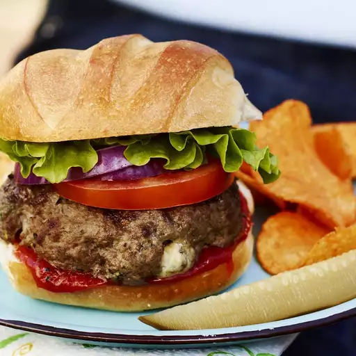

Cheese Burger

About the recipe:
The ultimate handheld burger requires the best bun possible, and in my opinion, it doesn’t get any better than a brioche bun. Sweet, buttery heaven!
Begin by whisking the egg, salt, and pepper together in a large bowl. Then, add the ground beef and bread crumbs before forming the mixture into ¾-inch patties. Place the patties on a preheated grill and cook for six to eight minutes per side.
Make sure the beef's temperature reads at least 160 degrees F before serving, and you're ready to go. Top with classic condiments like mustard,
ketchup, and mayo for full-fledged flavor.
Ingredients:
- 1 large egg
- ½ teaspoon salt
- ½ teaspoon ground black pepper
- 1 pound ground beef
- ½ cup fine dry bread crumbs
Directions:
- Step one:Preheat an outdoor grill for high heat and lightly oil grate.
- Step two:Whisk together egg, salt, and pepper in a medium bowl.
:max_bytes(150000):strip_icc():format(webp)/25473-the-perfect-basic-burger-ddmfs-Step1-4x3-88c586ec9b9943fe84257fdce3db9971.jpg)
- Step three:Add ground beef and bread crumbs and mix with your hands or a fork until well blended.
:max_bytes(150000):strip_icc():format(webp)/25473-the-perfect-basic-burger-ddmfs-Step2-4x3-6ce4908408304d92aedfc5f22dc16669.jpg)
- Step four:Form into four 3/4-inch-thick patties.
:max_bytes(150000):strip_icc():format(webp)/25473-the-perfect-basic-burger-ddmfs-Step3-4x3-cf6321a5f613446ea6d50e60ade7473e.jpg)
- Step five:Place patties on the preheated grill. Cover and cook 6 to 8 minutes per side, or to desired doneness. An instant-read thermometer inserted into the center should read at least 160 degrees F (70 degrees C).
:max_bytes(150000):strip_icc():format(webp)/25473-the-perfect-basic-burger-ddmfs-Step4-4x3-e462a501f4594502ab549e89230af242.jpg)
- Step six:Serve hot and enjoy!
:max_bytes(150000):strip_icc():format(webp)/25473-the-perfect-basic-burger-DDMFS-4x3-56eaba3833fd4a26a82755bcd0be0c54.jpg)